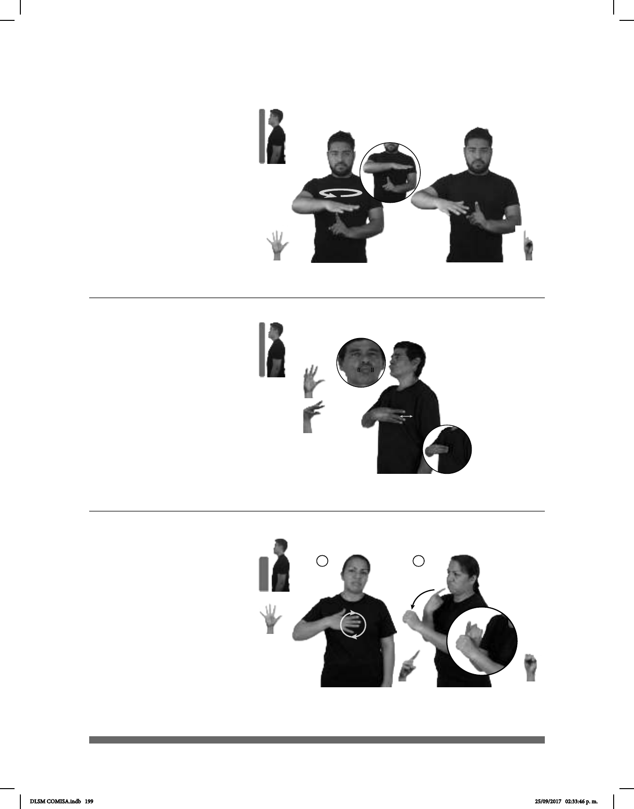

199
Seña: SM
Seña que pasa de 5.2
a 5.22
Palma hacia adentro.
Sobre el pecho.
El pulgar se aproxima a
los dedos de la mano.
v. tr. Alimentar la madre,
la nodriza o una hembra animal a su
hijo o cría con leche de sus pechos.
Seña: SB
MD 5.1, MB 1.1
MD palma hacia abajo. MB
palma hacia la derecha.
A la altura del pecho. MD sobre
MB.
La MD se mueve formando
círculos.
1. adv. Denota la situación de
personas o cosas que circundan a otras, o la
dirección en que se mueven para circundar-
las. 2. sust. m. Entorno físico o de situación,
político, histórico, cultural o de cualquier
otra índole de un lugar, una colectividad, una
época o un hecho.
(5-G 20)
1
2
(5-G 19)
pro-TÚ EMBARAZO, YA LUEGO pro-TÚ AMAMANTAR
Tú estás embarazada, después vas a amamantar.
_______muy_
ESE CONTEXTO IMPORTANTE VERDAD
El contexto es verdaderamente importante.
Seña: SC: I. SM; II. SB
I. 5.1; II. MD 1.4, MB
S.1
I. Palma hacia adentro; II.
MD la palma inicia hacia adentro y
termina hacia arriba. MB palma oblicua
hacia la derecha y hacia abajo.
I. Sobre el pecho; II. La MD
inicia a la altura del cuello y termina
sobre MB. MB a la altura del pecho.
I. La mano se mueve
formando círculos; II. La MD se mueve
formando un arco.
adj. Persona que mantiene
relaciones sexuales con otra fuera del
matrimonio.
(5-G 21)
JEFE pos-MI PRIMO UN AMANTE pro-ÉL TENER
El jefe de mi primo tiene una amante.
DLSM COMISA.indb 199 25/09/2017 02:33:46 p. m.